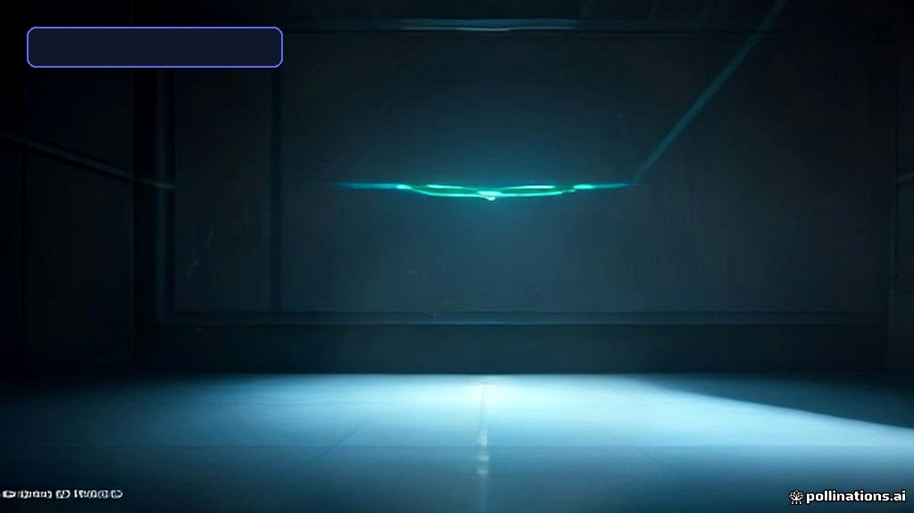

<!DOCTYPE html>
<html lang="en" class="scroll-smooth">
<head>
    <meta charset="UTF-8">
    <meta name="viewport" content="width=device-width, initial-scale=1.0">
    <title>Everything Search Utility: The Ultimate 2026 Master Guide & Performance Review | LatestTech Hub</title>
    <meta name="description" content="Master Voidtools Everything search utility with our complete 2026 guide. Learn advanced search syntax, HTTP server setups, CLI tools, and index optimization.">
    <meta name="author" content="LatestTech Editorial Team">
    <link rel="canonical" href="https://jtbsocial.github.io/posts/everything-search-utility-the-ultimate-2026-master-guide-per.html">
    
    <!-- Open Graph / SEO -->
    <meta property="og:type" content="article">
    <meta property="og:title" content="Everything Search Utility: The Ultimate 2026 Master Guide & Performance Review">
    <meta property="og:description" content="Master Voidtools Everything search utility with our complete 2026 guide. Learn advanced search syntax, HTTP server setups, CLI tools, and index optimization.">
    <meta property="og:image" content="https://jtbsocial.github.io/assets/images/everything-search-utility-the-ultimate-2026-master-guide-per-featured.jpg">
    <meta name="twitter:card" content="summary_large_image">
    <meta name="p:domain_verify" content="cfb450e2c89091ff91473d4d9fb9c5d1"/>
    
    <!-- Google Fonts & Tailwind CDN -->
    <link rel="preconnect" href="https://fonts.googleapis.com">
    <link rel="preconnect" href="https://fonts.gstatic.com" crossorigin>
    <link href="https://fonts.googleapis.com/css2?family=Outfit:wght@500;600;700;800&family=Plus+Jakarta+Sans:wght@400;500;600;700;800&display=swap" rel="stylesheet">
    <script src="https://cdn.tailwindcss.com?plugins=typography"></script>
    <script>
        tailwind.config = {
            darkMode: 'class',
            theme: {
                extend: {
                    fontFamily: {
                        sans: ['Plus Jakarta Sans', 'sans-serif'],
                        display: ['Outfit', 'sans-serif'],
                    },
                    colors: {
                        primary: { 50: '#eef2ff', 100: '#e0e7ff', 500: '#6366f1', 600: '#4f46e5', 700: '#4338ca' }
                    }
                }
            }
        }
    </script>
    <link rel="stylesheet" href="../assets/css/style.css">
    
    <script type="application/ld+json">{"@context": "https://schema.org", "@type": "FAQPage", "mainEntity": [{"@type": "Question", "name": "What makes Voidtools Everything so much faster than built-in Windows Search?", "acceptedAnswer": {"@type": "Answer", "text": "Voidtools Everything bypasses traditional file traversal by reading the NTFS Master File Table (MFT) and USN Change Journal directly. Rather than scanning file contents, it indexes raw name and metadata paths from disk journals in real-time."}}, {"@type": "Question", "name": "Is Voidtools Everything completely free for commercial and personal use?", "acceptedAnswer": {"@type": "Answer", "text": "Yes. Voidtools Everything is 100% freeware for both personal and commercial use without subscription fees, forced telemetry, or bundled third-party adware."}}, {"@type": "Question", "name": "How much system RAM and storage space does Everything consume?", "acceptedAnswer": {"@type": "Answer", "text": "Everything is lightweight, using approximately 14 MB of RAM and 5 MB of disk space per 100,000 indexed files. Even indexing millions of files uses a fraction of typical system resources."}}, {"@type": "Question", "name": "How do I enable the Everything Server Plugin for remote file searching?", "acceptedAnswer": {"@type": "Answer", "text": "Navigate to Tools -> Options -> HTTP Server in Everything, check Enable HTTP Server, choose your network port, set username credentials, and connect remotely from any web browser across your LAN."}}, {"@type": "Question", "name": "Can Everything index non-NTFS drives like FAT32, exFAT, or network shares?", "acceptedAnswer": {"@type": "Answer", "text": "Yes. Non-NTFS storage drives and network attached storage (NAS) can be added under Tools -> Options -> Indexes -> Folders, allowing full directory monitoring across external formats."}}]}</script>
</head>
<body class="bg-slate-50 dark:bg-slate-950 text-slate-800 dark:text-slate-100 min-h-screen flex flex-col font-sans transition-colors duration-200 antialiased">
    <!-- Navbar -->
    <header class="sticky top-0 z-50 backdrop-blur-md bg-white/90 dark:bg-slate-900/90 border-b border-slate-200/80 dark:border-slate-800/80 shadow-sm">
        <div class="max-w-5xl mx-auto px-4 sm:px-6 py-4 flex items-center justify-between">
            <a href="../index.html" class="flex items-center gap-2 text-2xl font-black font-display bg-gradient-to-r from-indigo-600 to-violet-600 bg-clip-text text-transparent">
                ⚡ LatestTech Hub
            </a>
            <nav class="hidden md:flex items-center gap-8 text-sm font-bold text-slate-600 dark:text-slate-300">
                <a href="../index.html" class="hover:text-indigo-600 dark:hover:text-indigo-400 transition-colors">Home</a>
                <a href="../about.html" class="hover:text-indigo-600 dark:hover:text-indigo-400 transition-colors">About</a>
                <a href="../contact.html" class="hover:text-indigo-600 dark:hover:text-indigo-400 transition-colors">Contact</a>
                <a href="../privacy-policy.html" class="hover:text-indigo-600 dark:hover:text-indigo-400 transition-colors">Privacy</a>
            </nav>
            <div class="flex items-center gap-3">
                <button id="themeToggle" class="p-2.5 rounded-xl bg-slate-100 dark:bg-slate-800 text-slate-600 dark:text-slate-300 hover:bg-slate-200 transition-colors" aria-label="Toggle Theme">
                    🌙
                </button>
            </div>
        </div>
    </header>

    <div id="progressBar" class="fixed top-0 left-0 h-1.5 bg-gradient-to-r from-indigo-500 via-purple-500 to-pink-500 z-50 transition-all duration-150" style="width: 0%"></div>

    <main class="max-w-7xl mx-auto px-4 sm:px-6 lg:px-8 py-12 flex-grow">
        <!-- Breadcrumb -->
        <nav class="flex items-center gap-2 text-xs text-slate-500 dark:text-slate-400 mb-8 font-semibold uppercase tracking-wider">
            <a href="../index.html" class="hover:text-indigo-600">Home</a> &rsaquo;
            <span class="text-indigo-600 dark:text-indigo-400">Tech Trends</span> &rsaquo;
            <span class="truncate max-w-[200px] text-slate-400">Everything Search Utility: The Ultimate 2026 Master Guide & Performance Review</span>
        </nav>

        <!-- Two-Column Layout: Article + Sidebar -->
        <div class="grid grid-cols-1 lg:grid-cols-[1fr_320px] gap-10 items-start">
            
            <!-- LEFT: Main Article -->
            <article class="bg-white dark:bg-slate-900 rounded-3xl p-6 sm:p-10 lg:p-12 shadow-sm border border-slate-100 dark:border-slate-800">
                <div class="flex items-center gap-3 mb-6">
                    <span class="px-3.5 py-1.5 bg-indigo-600 text-white rounded-xl text-xs font-black uppercase tracking-wider shadow-sm">Tech Trends</span>
                    <span class="text-xs font-semibold text-slate-400">&bull; 2026-11-24</span>
                    <span class="text-xs font-semibold text-slate-400">&bull; ⏱️ 10 min read</span>
                </div>

                <h1 class="text-3xl sm:text-4xl font-black font-display leading-[1.15] text-slate-900 dark:text-white mb-6">
                    Everything Search Utility: The Ultimate 2026 Master Guide & Performance Review
                </h1>

                <p class="text-lg text-slate-600 dark:text-slate-300 mb-8 leading-relaxed font-medium">
                    Master Voidtools Everything search utility with our complete 2026 guide. Learn advanced search syntax, HTTP server setups, CLI tools, and index optimization.
                </p>

                <div class="mb-10 rounded-2xl overflow-hidden shadow-xl border border-slate-100 dark:border-slate-800 aspect-video">
                    
                </div>

                
        <div class="my-10 p-6 border-2 border-dashed border-slate-200 dark:border-slate-800 rounded-2xl text-center bg-slate-50/50 dark:bg-slate-900/40 text-xs font-semibold text-slate-400">
            <span>SPONSORED ADVERTISEMENT</span>
            <div class="min-h-[100px] flex items-center justify-center font-mono text-slate-300 dark:text-slate-600 mt-2">
                <!-- Google AdSense Responsive Slot -->
            </div>
        </div>
        

                <!-- Rendered Article Body -->
                <div class="article-body">
                    <p>If you have ever stared at the spinning loading bar of default Windows File Explorer search while waiting ten minutes to find a misplaced spreadsheet, you know the quiet frustration of modern digital storage. Built-in operating system search engines have grown increasingly bloat-heavy, blending local file queries with Bing web search, AI assistant prompts, and telemetry overhead.</p>
<p>Enter <strong>Everything</strong> by <a href="https://jtbsocial.github.io/posts/everything-search-engine-voidtools-ultimate-2026-guide-maste.html">Voidtools</a>—the legendary lightweight freeware application that index millions of files across multi-terabyte drives in fractions of a second. As digital file collections balloon into hundreds of gigabytes across NVMe SSDs, external hard drives, and cloud-synced folders, Voidtools Everything remains the undisputed gold standard for local file discovery in 2026.</p>
<p>In this comprehensive 2026 master guide, we break down how Everything functions, how to utilize its advanced search operators, setting up server plugins, command-line interfaces (CLI), and optimizing system performance to make file management effortless.</p>
<hr />
<h2 id="toc-0" id="key-takeaways-executive-summary">⚡ Key Takeaways &amp; Executive Summary</h2>
<ul>
<li><strong>Instant File <a href="https://jtbsocial.github.io/posts/everything-search-tool-the-ultimate-in-depth-2026-guide-to-i.html">Indexing</a>:</strong> Everything indexes a fresh Windows installation containing over 100,000 files in under 1 second using low-level NTFS USN journal tracking.</li>
<li><strong>Ultra-Minimal Resource Footprint:</strong> Uses less than 15 MB of RAM and negligible CPU power when idling, making it exceptionally lightweight.</li>
<li><strong>Advanced Query Syntax:</strong> Supports Boolean logic, wildcard pattern matching, regular expressions (Regex), file content searching, and size filters.</li>
<li><strong>Power-User Ecosystem:</strong> Offers dedicated server plugins, HTTP/FTP access, language packs, and a robust Command-Line Interface (CLI).</li>
<li><strong>2026 Status:</strong> Fully compatible with Windows 11 (24H2/25H1), ARM64 Windows architecture, and network-attached storage (NAS) mapping.</li>
</ul>
<hr />
<h2 id="toc-1" id="what-is-voidtools-everything">What is Voidtools Everything?</h2>
<div style="margin: 2.5rem 0; padding: 1.75rem; background: linear-gradient(135deg, #4f46e5 0%, #7c3aed 100%); border-radius: 1.25rem; color: white; box-shadow: 0 15px 30px -5px rgba(0, 0, 0, 0.25);">
    <div style="display: flex; align-items: flex-start; gap: 1rem; flex-wrap: wrap;">
        <div style="flex: 1; min-width: 250px;">
            <span style="display: inline-block; padding: 0.3rem 0.8rem; background: rgba(255,255,255,0.2); border-radius: 0.5rem; font-size: 0.75rem; font-weight: 800; letter-spacing: 0.05em; margin-bottom: 0.75rem;">🔥 STAFF PICK</span>
            <h4 style="font-size: 1.35rem; font-weight: 900; margin: 0 0 0.5rem 0; line-height: 1.25;">Supercharge Your Workflow with Top AI Tools</h4>
            <p style="font-size: 0.95rem; opacity: 0.95; margin: 0 0 1.25rem 0; line-height: 1.6;">Explore the 10 best free AI productivity tools that are automating 90% of daily work for professionals in 2026.</p>
            <a href="https://jtbsocial.github.io/posts/top-10-free-ai-productivity-tools-that-will-automate-90-of-y.html" style="display: inline-block; padding: 0.8rem 1.6rem; background: white; color: #0f172a; font-weight: 900; border-radius: 0.85rem; text-decoration: none; font-size: 0.9rem; box-shadow: 0 4px 12px rgba(0,0,0,0.15); transition: transform 0.2s;">Explore Top AI Tools →</a>
        </div>
    </div>
</div>

<p>Created by David Carpenter of Voidtools, <strong>Everything</strong> is a lightweight desktop search utility designed exclusively for Microsoft Windows operating systems. Unlike default OS tools that spend hours indexing every character within thousands of documents, Everything focuses primarily on indexing file names and folder structures at lightning speeds.</p>
<p>When launched for the first time on a fresh drive, Everything builds a full index of your local NTFS storage volumes almost instantaneously. Because it interacts directly with low-level disk systems rather than scanning directories folder-by-folder, searches update live as you type each keystroke.</p>
<pre><code>+-------------------------------------------------------------------------+
|                        HOW EVERYTHING INDEXES FAST                       |
+-------------------------------------------------------------------------+
|  Windows NTFS Volume  --&gt;  USN Change Journal  --&gt;  Everything Index    |
|  (Low-level File Table)   (Real-time File Changes)  (In-Memory DB)    |
+-------------------------------------------------------------------------+
|  Result: Instantaneous search queries with near-zero CPU disk scanning  |
+-------------------------------------------------------------------------+
</code></pre>
<h3 id="how-it-works-the-ntfs-usn-journal-advantage">How It Works: The NTFS USN Journal Advantage</h3>
<p>The secret to Everything's unbelievable speed lies in how it interacts with the NTFS file system. Microsoft Windows uses the <strong>Master File Table (MFT)</strong> and <strong>Update Sequence Number (USN) Change Journal</strong> to record changes made to files and directories on NTFS volumes.</p>
<p>Instead of recursively browsing through every directory on your storage drive—which causes high disk usage and thermal throttling—Everything requests read access to the USN Change Journal directly. It parses this raw structural record into an optimized in-memory database. Whenever a file is created, renamed, or deleted anywhere on your system, the USN journal broadcasts the change, and Everything updates its search index instantly.</p>
<hr />
<h2 id="toc-2" id="voidtools-everything-vs-windows-search-competitors">Voidtools Everything vs. Windows Search &amp; Competitors</h2>
<p>To understand why system administrators, software developers, video editors, and power users swear by Everything, let's examine how it stacks up against built-in Windows Search and third-party tools in 2026.</p>
<table>
<thead>
<tr>
<th>Feature / Metric</th>
<th>Voidtools Everything</th>
<th>Native Windows 11 Search</th>
<th>PowerToys Run</th>
<th>Everything Toolbar (Plugin)</th>
</tr>
</thead>
<tbody>
<tr>
<td><strong>Initial Index Time (500k files)</strong></td>
<td>~1.5 Seconds</td>
<td>30 to 90 Minutes</td>
<td>Relies on Windows Search</td>
<td>Instant (Uses Everything Engine)</td>
</tr>
<tr>
<td><strong>Search Speed</strong></td>
<td>Instant (Real-Time)</td>
<td>Slow / Delayed</td>
<td>Moderate</td>
<td>Instant</td>
</tr>
<tr>
<td><strong>RAM Usage</strong></td>
<td>~10 MB – 40 MB</td>
<td>150 MB – 500 MB+</td>
<td>~80 MB – 150 MB</td>
<td>~15 MB</td>
</tr>
<tr>
<td><strong>Background CPU Load</strong></td>
<td>~0.0% Idle</td>
<td>Variable (10%–30%)</td>
<td>Low</td>
<td>~0.0% Idle</td>
</tr>
<tr>
<td><strong>Regex &amp; Wildcards</strong></td>
<td>Full Native Support</td>
<td>Limited / Clunky</td>
<td>Basic</td>
<td>Full Native Support</td>
</tr>
<tr>
<td><strong>Network Drive Search</strong></td>
<td>Supported (ETP/HTTP/Share)</td>
<td>Indexing limited</td>
<td>No direct index</td>
<td>Supported</td>
</tr>
<tr>
<td><strong>Built-in Web/AI Ads</strong></td>
<td>Zero (Pure Software)</td>
<td>High (Bing / Copilot)</td>
<td>Zero</td>
<td>Zero</td>
</tr>
<tr>
<td><strong>License</strong></td>
<td>Freeware</td>
<td>Bundled with OS</td>
<td>Open Source (MIT)</td>
<td>Open Source</td>
</tr>
</tbody>
</table>
<hr />
<h2 id="toc-3" id="key-features-breakdown">Key Features Breakdown</h2>
<h3 id="1-minimal-system-resource-usage">1. Minimal System Resource Usage</h3>
<p>Standard desktop search tools often run background indexer services that spin up disk reads right when you are playing a game or rendering a video. Everything requires minimal system resources:<br />
* A clean installation uses approximately <strong>14 MB of RAM</strong> for 100,000 files.<br />
* Disk space consumption for the database index is roughly <strong>3 MB to 5 MB</strong> per 100,000 files.<br />
* Zero active background processing occurs when queries are inactive.</p>
<h3 id="2-live-instant-searching-custom-filters">2. Live Instant Searching &amp; Custom Filters</h3>
<p>As you type into the search bar, results filter live in real time. You can restrict searches to specific file types with single-click filters like Audio, Executable, Archive, Document, Picture, or Video.</p>
<h3 id="3-server-plugin-etpftp-remote-search">3. Server Plugin &amp; ETP/FTP Remote Search</h3>
<p>Everything can run as an HTTP or ETP/FTP server, allowing you to search files on remote workstations, server racks, or NAS units across your local area network (LAN) or virtual private network (VPN) securely.</p>
<h3 id="4-command-line-interface-cli">4. Command-Line Interface (CLI)</h3>
<p>For developers and automation engineers, the optional Command-Line Interface (<code>es.exe</code>) enables command-prompt integration. You can pipe search results directly into PowerShell scripts, batch automation workflows, or system backup utilities.</p>
<hr />
<h2 id="toc-4" id="master-search-syntax-cheat-sheet">Master Search Syntax &amp; Cheat Sheet</h2>
<p>Unlocking the full power of Everything comes down to knowing its intuitive search syntax. Here is a reference table of the <a href="https://jtbsocial.github.io/posts/everything-you-need-to-know-about-fbi-ten-most-wanted-fugiti.html">most</a> useful search operators:</p>
<table>
<thead>
<tr>
<th>Search Query Example</th>
<th>Description / Function</th>
</tr>
</thead>
<tbody>
<tr>
<td><code>report .pdf</code></td>
<td>Finds files containing both "report" and ".pdf" anywhere in their name</td>
</tr>
<tr>
<td><code>"annual summary"</code></td>
<td>Searches for the exact phrase "annual summary"</td>
</tr>
<tr>
<td><code>spec|sheet</code></td>
<td>Finds files containing either "spec" OR "sheet"</td>
</tr>
<tr>
<td><code>!temp</code></td>
<td>Excludes any file or folder containing the word "temp"</td>
</tr>
<tr>
<td><code>ext:png;jpg;gif</code></td>
<td>Displays only image files with png, jpg, or gif extensions</td>
</tr>
<tr>
<td><code>size:&gt;1gb</code></td>
<td>Displays files larger than 1 Gigabyte</td>
</tr>
<tr>
<td><code>datecreated:today</code></td>
<td>Lists files created on the current date</td>
</tr>
<tr>
<td><code>path:d:\projects</code></td>
<td>Restricts search strictly to the <code>D:\projects</code> directory</td>
</tr>
<tr>
<td><code>dupe:</code></td>
<td>Identifies duplicate file names across indexed drives</td>
</tr>
<tr>
<td><code>empty:</code></td>
<td>Locates empty folders or zero-byte files</td>
</tr>
</tbody>
</table>
<h3 id="advanced-regex-regular-expressions-examples">Advanced Regex (Regular Expressions) Examples</h3>
<p>By toggling <strong>Search -&gt; Enable Regex</strong> (or using <code>regex:</code> syntax), you can run complex pattern matching:<br />
* <code>regex:^[0-9]{4}-</code> : Finds files starting with a 4-digit year followed by a hyphen (e.g., <code>2026-invoice.pdf</code>).<br />
* <code>regex:(backup|archive)</code> : Matches exact whole words "backup" or "archive".</p>
<hr />
<h2 id="toc-5" id="installation-and-optimal-configuration-guide">Installation and Optimal Configuration Guide</h2>
<p>Getting started with Everything takes under two minutes. Follow this step-by-step installation guide to set up your environment optimally.</p>
<pre><code>+-------------------------------------------------------------------------+
|                    OPTIMAL INSTALLATION WORKFLOW                         |
+-------------------------------------------------------------------------+
|  1. Download Installer  --&gt; 2. Select Everything Service  --&gt; 3. Configure |
|  (64-bit / ARM64 build)     (Runs without Admin prompts)   Quick Keys   |
+-------------------------------------------------------------------------+
</code></pre>
<h3 id="step-1-downloading-the-right-package">Step 1: Downloading the Right Package</h3>
<p>Visit the official Voidtools website (<code>voidtools.com</code>) and select the package matching your operating system:<br />
* <strong>Everything Installer (64-bit / ARM64):</strong> Recommended for standard installations.<br />
* <strong>Portable Version:</strong> Zip file requiring no installation—ideal for running off USB drives.<br />
* <strong>Everything Server Plugin:</strong> Adds advanced network-wide server indexing capabilities.<br />
* <strong>Command-line Interface (ES):</strong> Download <code>es.exe</code> for console automation.</p>
<h3 id="step-2-privilege-setup-service-vs-admin-mode">Step 2: Privilege Setup (Service vs. Admin Mode)</h3>
<p>During installation, you will be prompted to select how Everything accesses your disk journals:<br />
1. <strong>Install Everything Service (Recommended):</strong> Runs a silent background service with system privileges to read the USN journal. The GUI client runs standard user permissions, avoiding UAC administrator prompts every time you launch it.<br />
2. <strong>Run as Administrator:</strong> Requires granting administrative rights on launch. Not recommended for multi-user shared machines.</p>
<h3 id="step-3-setting-up-global-hotkeys">Step 3: Setting Up Global Hotkeys</h3>
<p>To make search instant from anywhere in Windows:<br />
1. Open Everything and navigate to <strong>Tools -&gt; Options</strong>.<br />
2. Select <strong>Keyboard</strong> under the General side menu.<br />
3. Click on <strong>Toggle Hotkey</strong> and set a shortcut (e.g., <code>Alt + Space</code> or <code>Ctrl + Shift + F</code>).<br />
4. Click <strong>Apply</strong>.<br />
Now, pressing your hotkey instantly pops up the Everything search bar from any app.</p>
<hr />
<h2 id="toc-6" id="integration-bringing-everything-to-windows-taskbar">Integration: Bringing Everything to Windows Taskbar</h2>
<p>While the standalone Everything window is fast, power users often integrate it directly into their Windows desktop UI.</p>
<h3 id="using-everything-toolbar">Using Everything Toolbar</h3>
<p><strong>Everything Toolbar</strong> is a popular open-source companion utility that replaces the sluggish native Windows taskbar search box with Everything's lightning engine.</p>
<pre><code>+-------------------------------------------------------------------------+
|                       EVERYTHING TOOLBAR WORKFLOW                        |
+-------------------------------------------------------------------------+
|  User Presses Hotkey  --&gt; Everything Toolbar Opens --&gt; Real-time Search  |
|  (e.g. Win + S)           (Docked on Taskbar)          via Voidtools API|
+-------------------------------------------------------------------------+
</code></pre>
<ol>
<li>Download Everything Toolbar from GitHub.</li>
<li>Run the installer while Voidtools Everything is active in your system tray.</li>
<li>Dock the search field into your Windows 11 taskbar.</li>
<li>Enjoy native look-and-feel taskbar searching with instant results.</li>
</ol>
<hr />
<h2 id="toc-7" id="pros-cons-and-user-verdict">Pros, Cons, and User Verdict</h2>
<h3 id="the-pros">🟢 The Pros</h3>
<ul>
<li><strong>Unmatched Search Speed:</strong> Finds files across millions of records in milliseconds.</li>
<li><strong>Lightweight Footprint:</strong> Negligible CPU, RAM, and disk IO overhead.</li>
<li><strong>Clean &amp; Ad-Free:</strong> Zero telemetry, no web ad integration, clean interface.</li>
<li><strong>Deep Customization:</strong> Complete control over color themes, custom filters, indexing rules, and export formats (CSV, TXT).</li>
<li><strong>Network Friendly:</strong> Index mapped network drives and HTTP server capabilities.</li>
</ul>
<h3 id="the-cons">🔴 The Cons</h3>
<ul>
<li><strong>NTFS Dependent for Instant Speed:</strong> Fast USN journal indexing works primarily on NTFS drives. Non-NTFS drives (FAT32, exFAT, ReFS) require background directory monitoring.</li>
<li><strong>Content Search is Slower:</strong> File name searching is instantaneous; searching within document content requires reading full file streams.</li>
<li><strong>Windows Exclusive:</strong> Voidtools Everything is strictly designed for Microsoft Windows (though wine/emulation workarounds exist on Linux).</li>
</ul>
<h3 id="who-is-this-software-for">Who Is This Software For?</h3>
<ul>
<li><strong>IT Administrators &amp; Technicians:</strong> Track down system log files, configuration scripts, and remote machine directories quickly.</li>
<li><strong>Content Creators &amp; Editors:</strong> Organize terabytes of video footage, audio samples, project files, and raw imagery.</li>
<li><strong>Developers &amp; Software Engineers:</strong> Search source code repositories, directory structures, and build binaries instantly.</li>
<li><strong>Everyday Windows Users:</strong> Anyone tired of slow OS file searches.</li>
</ul>
<hr />
<h2 id="toc-8" id="faqs-high-intent-questions-answered">FAQs: High-Intent Questions Answered</h2>
<h3 id="1-what-makes-voidtools-everything-so-much-faster-than-built-in-windows-search">1. What makes Voidtools Everything so much faster than built-in Windows Search?</h3>
<p>Voidtools Everything bypasses traditional file-by-file system traversal by reading the <strong>NTFS Master File Table (MFT)</strong> and <strong>USN Change Journal</strong> directly. Rather than reading the contents of every file, it indexes raw name and path data directly from the system storage journal, completing queries in milliseconds.</p>
<h3 id="2-is-voidtools-everything-completely-free-for-commercial-and-personal-use">2. Is Voidtools Everything completely free for commercial and personal use?</h3>
<p>Yes. Voidtools Everything is 100% freeware for both personal and commercial use. There are no hidden subscription fees, lockouts, or bundled adware. Voluntary donations can be made directly to the developer via the official Voidtools website.</p>
<h3 id="3-how-much-system-ram-and-storage-space-does-everything-consume">3. How much system RAM and storage space does Everything consume?</h3>
<p>Everything is extremely lightweight. An index containing <strong>100,000 files</strong> consumes roughly <strong>14 MB of RAM</strong> and under <strong>5 MB of storage space</strong> for its database file. Even setups indexing 2 million files rarely exceed 150 MB of RAM usage.</p>
<h3 id="4-how-do-i-enable-the-everything-server-plugin-for-remote-file-searching">4. How do I enable the Everything Server Plugin for remote file searching?</h3>
<p>Open Everything, navigate to <strong>Tools -&gt; Options -&gt; HTTP Server</strong> (or <strong>ETP/FTP Server</strong>), check <strong>Enable HTTP Server</strong>, set your designated port (e.g., <code>80</code> or <code>8080</code>), and set authentication credentials. Remote devices can then search your indexed files securely using any modern web browser across your local network.</p>
<h3 id="5-can-everything-index-non-ntfs-drives-like-fat32-exfat-or-network-shares">5. Can Everything index non-NTFS drives like FAT32, exFAT, or network shares?</h3>
<p>Yes. While NTFS volumes index instantly via USN journals, non-NTFS drives (such as FAT32, exFAT, USB thumb drives, or mapped network NAS shares) can be added under <strong>Tools -&gt; Options -&gt; Indexes -&gt; Folders</strong>. Everything monitors these folders using standard directory notifications.</p>
<hr />
<h2 id="toc-9" id="final-verdict-is-voidtools-everything-essential-in-2026">Final Verdict: Is Voidtools Everything Essential in 2026?</h2>
<p>Even as modern desktop operating systems integrate AI assistants and web services into local search interfaces, <strong>Voidtools Everything remains an indispensable utility</strong> for Windows users. Its ultra-fast performance, low hardware requirements, deep search syntax, and privacy-focused design make it one of the greatest utility software programs ever crafted.</p>
<p>If you have not added Voidtools Everything to your toolkit, downloading it today will instantly transform how you interact with your digital workspace.</p>
                </div>

                
        <div class="my-10 p-6 border-2 border-dashed border-slate-200 dark:border-slate-800 rounded-2xl text-center bg-slate-50/50 dark:bg-slate-900/40 text-xs font-semibold text-slate-400">
            <span>SPONSORED ADVERTISEMENT</span>
            <div class="min-h-[100px] flex items-center justify-center font-mono text-slate-300 dark:text-slate-600 mt-2">
                <!-- Google AdSense Responsive Slot -->
            </div>
        </div>
        

                <!-- Tags -->
                <div class="mt-14 pt-8 border-t border-slate-200 dark:border-slate-800 flex flex-wrap gap-2.5 items-center">
                    <span class="text-xs font-black text-slate-400 uppercase mr-2 tracking-wider">Tags:</span>
                    <span class="px-3.5 py-1.5 bg-indigo-50 dark:bg-indigo-950/60 text-indigo-600 dark:text-indigo-400 rounded-xl text-xs font-bold border border-indigo-100 dark:border-indigo-900/40">#Voidtools Everything</span><span class="px-3.5 py-1.5 bg-indigo-50 dark:bg-indigo-950/60 text-indigo-600 dark:text-indigo-400 rounded-xl text-xs font-bold border border-indigo-100 dark:border-indigo-900/40">#Windows Search</span><span class="px-3.5 py-1.5 bg-indigo-50 dark:bg-indigo-950/60 text-indigo-600 dark:text-indigo-400 rounded-xl text-xs font-bold border border-indigo-100 dark:border-indigo-900/40">#Tech Tools</span><span class="px-3.5 py-1.5 bg-indigo-50 dark:bg-indigo-950/60 text-indigo-600 dark:text-indigo-400 rounded-xl text-xs font-bold border border-indigo-100 dark:border-indigo-900/40">#File Management</span><span class="px-3.5 py-1.5 bg-indigo-50 dark:bg-indigo-950/60 text-indigo-600 dark:text-indigo-400 rounded-xl text-xs font-bold border border-indigo-100 dark:border-indigo-900/40">#Windows Utilities</span><span class="px-3.5 py-1.5 bg-indigo-50 dark:bg-indigo-950/60 text-indigo-600 dark:text-indigo-400 rounded-xl text-xs font-bold border border-indigo-100 dark:border-indigo-900/40">#System Optimization</span>
                </div>

                <!-- Author Box for E-E-A-T -->
                <div class="mt-10 p-6 sm:p-8 bg-slate-50 dark:bg-slate-800/50 rounded-2xl flex flex-col sm:flex-row items-center gap-5 border border-slate-200/80 dark:border-slate-700/80">
                    <div class="w-16 h-16 rounded-2xl bg-indigo-600 flex items-center justify-center text-white font-black text-2xl flex-shrink-0 shadow-lg shadow-indigo-500/20">
                        ⚡
                    </div>
                    <div class="text-center sm:text-left">
                        <h4 class="font-bold text-slate-900 dark:text-white font-display text-lg">LatestTech Editorial Team</h4>
                        <p class="text-sm text-slate-500 dark:text-slate-400 mt-1 leading-relaxed">
                            Researched, verified, and curated by the LatestTech Hub editorial team. Dedicated to bringing actionable insights, deep benchmarks, and practical tech guides.
                        </p>
                    </div>
                </div>
            </article>

            <!-- RIGHT: Sticky Sidebar -->
            <aside class="hidden lg:flex flex-col gap-6 sticky top-24">
                
                <!-- Table of Contents -->
                
        <div class="bg-white dark:bg-slate-900 rounded-2xl p-5 border border-slate-200 dark:border-slate-800 shadow-sm">
            <h3 class="text-sm font-black uppercase tracking-wider text-slate-900 dark:text-white mb-3 font-display flex items-center gap-2">
                📑 Table of Contents
            </h3>
            <ul class="space-y-0.5"><li><a href="#toc-0" class="block py-1.5 px-3 text-sm text-slate-600 dark:text-slate-400 hover:text-indigo-600 dark:hover:text-indigo-400 hover:bg-indigo-50 dark:hover:bg-indigo-950/30 rounded-lg transition-colors truncate">⚡ Key Takeaways &amp; Executive Summary</a></li>
<li><a href="#toc-1" class="block py-1.5 px-3 text-sm text-slate-600 dark:text-slate-400 hover:text-indigo-600 dark:hover:text-indigo-400 hover:bg-indigo-50 dark:hover:bg-indigo-950/30 rounded-lg transition-colors truncate">What is Voidtools Everything?</a></li>
<li><a href="#toc-2" class="block py-1.5 px-3 text-sm text-slate-600 dark:text-slate-400 hover:text-indigo-600 dark:hover:text-indigo-400 hover:bg-indigo-50 dark:hover:bg-indigo-950/30 rounded-lg transition-colors truncate">Voidtools Everything vs. Windows Search &amp; Competitors</a></li>
<li><a href="#toc-3" class="block py-1.5 px-3 text-sm text-slate-600 dark:text-slate-400 hover:text-indigo-600 dark:hover:text-indigo-400 hover:bg-indigo-50 dark:hover:bg-indigo-950/30 rounded-lg transition-colors truncate">Key Features Breakdown</a></li>
<li><a href="#toc-4" class="block py-1.5 px-3 text-sm text-slate-600 dark:text-slate-400 hover:text-indigo-600 dark:hover:text-indigo-400 hover:bg-indigo-50 dark:hover:bg-indigo-950/30 rounded-lg transition-colors truncate">Master Search Syntax &amp; Cheat Sheet</a></li>
<li><a href="#toc-5" class="block py-1.5 px-3 text-sm text-slate-600 dark:text-slate-400 hover:text-indigo-600 dark:hover:text-indigo-400 hover:bg-indigo-50 dark:hover:bg-indigo-950/30 rounded-lg transition-colors truncate">Installation and Optimal Configuration Guide</a></li>
<li><a href="#toc-6" class="block py-1.5 px-3 text-sm text-slate-600 dark:text-slate-400 hover:text-indigo-600 dark:hover:text-indigo-400 hover:bg-indigo-50 dark:hover:bg-indigo-950/30 rounded-lg transition-colors truncate">Integration: Bringing Everything to Windows Taskbar</a></li>
<li><a href="#toc-7" class="block py-1.5 px-3 text-sm text-slate-600 dark:text-slate-400 hover:text-indigo-600 dark:hover:text-indigo-400 hover:bg-indigo-50 dark:hover:bg-indigo-950/30 rounded-lg transition-colors truncate">Pros, Cons, and User Verdict</a></li>
<li><a href="#toc-8" class="block py-1.5 px-3 text-sm text-slate-600 dark:text-slate-400 hover:text-indigo-600 dark:hover:text-indigo-400 hover:bg-indigo-50 dark:hover:bg-indigo-950/30 rounded-lg transition-colors truncate">FAQs: High-Intent Questions Answered</a></li>
<li><a href="#toc-9" class="block py-1.5 px-3 text-sm text-slate-600 dark:text-slate-400 hover:text-indigo-600 dark:hover:text-indigo-400 hover:bg-indigo-50 dark:hover:bg-indigo-950/30 rounded-lg transition-colors truncate">Final Verdict: Is Voidtools Everything Essential in 2026?</a></li>
</ul>
        </div>
        

                <!-- Share This Article -->
                <div class="bg-white dark:bg-slate-900 rounded-2xl p-5 border border-slate-200 dark:border-slate-800 shadow-sm">
                    <h3 class="text-sm font-black uppercase tracking-wider text-slate-900 dark:text-white mb-4 font-display">
                        📤 Share This Guide
                    </h3>
                    <div class="flex flex-wrap gap-2">
                        <a href="https://twitter.com/intent/tweet?url=https://jtbsocial.github.io/posts/everything-search-utility-the-ultimate-2026-master-guide-per.html&text=Everything+Search+Utility:+The+Ultimate+2026+Master+Guide+&+Performance+Review" target="_blank" rel="noopener"
                           class="flex-1 py-2.5 px-3 bg-slate-900 dark:bg-slate-800 text-white text-xs font-bold rounded-xl text-center hover:bg-slate-700 transition-colors">
                            𝕏 Tweet
                        </a>
                        <a href="https://www.linkedin.com/sharing/share-offsite/?url=https://jtbsocial.github.io/posts/everything-search-utility-the-ultimate-2026-master-guide-per.html" target="_blank" rel="noopener"
                           class="flex-1 py-2.5 px-3 bg-blue-700 text-white text-xs font-bold rounded-xl text-center hover:bg-blue-600 transition-colors">
                            in LinkedIn
                        </a>
                        <a href="https://pinterest.com/pin/create/button/?url=https://jtbsocial.github.io/posts/everything-search-utility-the-ultimate-2026-master-guide-per.html&description=Everything+Search+Utility:+The+Ultimate+2026+Master+Guide+&+Performance+Review" target="_blank" rel="noopener"
                           class="flex-1 py-2.5 px-3 bg-red-600 text-white text-xs font-bold rounded-xl text-center hover:bg-red-500 transition-colors">
                            📌 Pin
                        </a>
                    </div>
                </div>

                <!-- Sidebar Ad Slot -->
                <div class="bg-white dark:bg-slate-900 rounded-2xl p-5 border border-slate-200 dark:border-slate-800 shadow-sm">
                    <div class="text-center text-xs font-semibold text-slate-400 mb-2">ADVERTISEMENT</div>
                    <div class="min-h-[250px] flex items-center justify-center border-2 border-dashed border-slate-200 dark:border-slate-700 rounded-xl text-slate-300 dark:text-slate-600 text-xs">
                        <!-- Google AdSense Sidebar Slot -->
                    </div>
                </div>

                <!-- Related Posts -->
                
        <div class="bg-white dark:bg-slate-900 rounded-2xl p-5 border border-slate-200 dark:border-slate-800 shadow-sm">
            <h3 class="text-sm font-black uppercase tracking-wider text-slate-900 dark:text-white mb-4 font-display flex items-center gap-2">
                🔥 Popular Guides
            </h3>
            <div class="space-y-1">
            <a href="everything-you-need-to-know-about-ralph-fiennes-in-depth-202.html" class="flex gap-3 p-2.5 rounded-xl hover:bg-slate-50 dark:hover:bg-slate-800/60 transition-colors group">
                
                <div class="min-w-0">
                    <h4 class="text-sm font-bold text-slate-800 dark:text-slate-200 group-hover:text-indigo-600 dark:group-hover:text-indigo-400 transition-colors line-clamp-2 leading-tight">Everything You Need to Know About ralph fiennes: In-Depth 2026 Guide</h4>
                    <span class="text-xs text-slate-400 mt-1 block">⏱️ 6 min</span>
                </div>
            </a>
            
            <a href="everything-you-need-to-know-about-botafogo-vs-so-paulo-in-de.html" class="flex gap-3 p-2.5 rounded-xl hover:bg-slate-50 dark:hover:bg-slate-800/60 transition-colors group">
                
                <div class="min-w-0">
                    <h4 class="text-sm font-bold text-slate-800 dark:text-slate-200 group-hover:text-indigo-600 dark:group-hover:text-indigo-400 transition-colors line-clamp-2 leading-tight">Everything You Need to Know About Botafogo vs São Paulo: In-Depth 2026 Guide</h4>
                    <span class="text-xs text-slate-400 mt-1 block">⏱️ 9 min</span>
                </div>
            </a>
            
            <a href="everything-you-need-to-know-about-michigan-lottery-in-depth-.html" class="flex gap-3 p-2.5 rounded-xl hover:bg-slate-50 dark:hover:bg-slate-800/60 transition-colors group">
                
                <div class="min-w-0">
                    <h4 class="text-sm font-bold text-slate-800 dark:text-slate-200 group-hover:text-indigo-600 dark:group-hover:text-indigo-400 transition-colors line-clamp-2 leading-tight">Everything You Need to Know About michigan lottery: In-Depth 2026 Guide</h4>
                    <span class="text-xs text-slate-400 mt-1 block">⏱️ 6 min</span>
                </div>
            </a>
            
            <a href="ny-giants-nfl-standings-2026-complete-nfc-east-playoff-race-.html" class="flex gap-3 p-2.5 rounded-xl hover:bg-slate-50 dark:hover:bg-slate-800/60 transition-colors group">
                
                <div class="min-w-0">
                    <h4 class="text-sm font-bold text-slate-800 dark:text-slate-200 group-hover:text-indigo-600 dark:group-hover:text-indigo-400 transition-colors line-clamp-2 leading-tight">NY Giants NFL Standings 2026: Complete NFC East Playoff Race & Analytics Guide</h4>
                    <span class="text-xs text-slate-400 mt-1 block">⏱️ 9 min</span>
                </div>
            </a>
            </div>
        </div>
        

                <!-- Newsletter Signup -->
                <div class="bg-gradient-to-br from-indigo-600 to-violet-700 rounded-2xl p-6 text-white shadow-lg">
                    <h3 class="text-sm font-black uppercase tracking-wider mb-2 font-display">📬 Stay Updated</h3>
                    <p class="text-xs opacity-90 mb-4 leading-relaxed">Get the latest AI tools, coding guides, and tech insights delivered weekly.</p>
                    <a href="../index.html" class="block w-full py-3 bg-white text-indigo-700 font-black text-sm rounded-xl text-center hover:bg-indigo-50 transition-colors shadow-sm">
                        Browse All Guides →
                    </a>
                </div>

            </aside>
        </div>
    </main>

    <!-- Footer -->
    <footer class="mt-auto border-t border-slate-200 dark:border-slate-800 bg-white dark:bg-slate-950 py-12">
        <div class="max-w-5xl mx-auto px-4 sm:px-6 grid grid-cols-1 md:grid-cols-4 gap-8">
            <div class="md:col-span-2">
                <h3 class="text-xl font-bold font-display text-indigo-600 dark:text-indigo-400 mb-2">⚡ LatestTech Hub</h3>
                <p class="text-sm text-slate-500 dark:text-slate-400 max-w-sm mb-4 leading-relaxed">Discover in-depth reviews, emerging AI technologies, gadget guides, and actionable tutorials.</p>
                <p class="text-xs text-slate-400">&copy; 2026 LatestTech Hub. All rights reserved.</p>
            </div>
            <div>
                <h4 class="text-sm font-bold uppercase tracking-wider text-slate-900 dark:text-white mb-3 font-display">Navigation</h4>
                <ul class="space-y-2 text-sm text-slate-600 dark:text-slate-400">
                    <li><a href="../index.html" class="hover:underline">Home</a></li>
                    <li><a href="../about.html" class="hover:underline">About Us</a></li>
                    <li><a href="../contact.html" class="hover:underline">Contact</a></li>
                    <li><a href="../sitemap.xml" class="hover:underline">Sitemap</a></li>
                </ul>
            </div>
            <div>
                <h4 class="text-sm font-bold uppercase tracking-wider text-slate-900 dark:text-white mb-3 font-display">Compliance</h4>
                <ul class="space-y-2 text-sm text-slate-600 dark:text-slate-400">
                    <li><a href="../privacy-policy.html" class="hover:underline">Privacy Policy</a></li>
                    <li><a href="../terms.html" class="hover:underline">Terms of Service</a></li>
                    <li><a href="../disclaimer.html" class="hover:underline">Disclaimer</a></li>
                </ul>
            </div>
        </div>
    </footer>
    <script src="../assets/js/main.js"></script>
</body>
</html>
